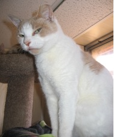

Cat Crew Annual Newsletter for 2013
Welcome to the third annual Cat Crew newsletter.
This year seemed to be the one to find many more street cats who were injured, sick and/or abused. We can't turn away from these helpless animals since they are most at risk. We take them directly to our amazing vets for whatever treatment they need, no questions asked. Once healed, our effort to find homes for them is more of a challenge since they are generally older cats, not as cute and cuddly as fresh-faced kittens. However, they are all lovable and so deserving of another chance at a happy and SAFE life.
The adoptable pet list includes:
- GONZO, an adult orange tabby with a broken jaw- he was on the street for over a week unable to eat or drink until we finally could trap him, bring him in for vet care and recovery. His jaw surgery was successful and he is now a stocky boy, waiting for a forever home. He will need a special adopter who understands shy cats. Gonzo loves attention though; once he trusts you, and does not have a mean bone in his body- he only craves love and attention.

- HOMER, an adult all grey tabby with allergies which caused hair loss and mouth and lip ulcers. He came in with a tin can tied to his foot and as a result had to have a toe amputated. Homer has recovered well in his foster home and is now truly ready for a permanent family of his own;

- PEACHES, an adult tan and white male who needed four teeth removed- he came to us very thin and hungry, obviously without adequate food for months;
- DOMINIC came to us from Philadelphia with a stab wound through his leg and diabetes. He needs a special person willing to continue his insulin treatments. Dominic is black with a white chest, he loves everybody.
Others we have helped this year:
- STELLA: A so so sweet female grey tortie with a broken pelvis. Her amazing foster mom healed her broken bones and her soul. Happily, Stella found her forever home thanks to Spay and Save, Inc. and is now safe and so so content.
- FAITH, a starved Calico found on the Norristown streets, still healing
- MISHU, another starved cat who found his forever home thanks to Spay and Save, Inc
- JIMMY, a beautiful tuxedo boy who had his eye permanently injured by a stone. He is FIV positive and is now in foster care
- JUNIOR an FIV positive all white male who came to us with an infected eye and needed surgery for entropion (inward turned eyelid). Junior is now in great health and would love a family of his own- he is gorgeous being all white and has one green eye and one blue eye.
Sadly, we have lost SAMANTHA, a feisty white/calico female with squamas cell carcinoma on her ears and eye. Being a mostly white cat, she was susceptible to skin cancer and after having lived on the streets for anunknown period of time she succumbed to the disease. However, Samantha spent one happy year at the end of her life in foster care, resting on "her" couch in front of the fire and enjoying all her favorite foods.
Earlier this year we were faced with a huge challenge in finding homes for over 20 cats that were abandoned in an old farmhouse in Royersford. We are so grateful to the generous volunteers at Stray Cat Blues and Forgotten Cats who helped us place most of the kitties. Three of these cats, however, were blind due to untreated eye infections and so we assumed would be most difficult to place. Our sincerest thanks go to Maria Goodyear who adopted Aemon, and Rita Wanner who adopted the other two (!) blind cats Miss Lucia and Sombra. Rita also had previously adopted a deaf cat as well, Miss Whisper. These women are truly cat angels.
We have spayed and neutered over 550 cats in the three years we have been incorporated as Cat Crew, some of which we have adopted into forever homes, many of which we had to release back to the streets. Most of the returned cats are fed by colony caretakers, but some will go hungry due to the sheer numbers of unwanted cats out there. We do what we can to help them most days of the year.
In November we approached the manager at the Pet Supplies Plus store in Blue Bell (DeKalb, behind the Ihop) to ask about doing some adoption days. They agreed to that, and also to setting up a semi-permanent cage so that we can display our adoptable cats on weekends. We are so grateful to Mark and his staff for this opportunity. We highly recommend shopping at Pet Supplies Plus ? prices are great, staff is friendly, helpful and knowledgeable, and it's convenient to the Norristown area. Peaches is currently on display on weekends!!
Our group depends on the generosity of animal lovers to keep us going, financially and motivationally. We see the worst of what can happen to homeless pets on the streets, but we also find the best in the folks who support what we do. These are the people who adopt our cats, the people who take the initiative to provide shelter and food to street cats on their own; those who lend a hand when they can to help us trap, transport and foster, and those who donate.
Thank you in advance for any help you can give us in 2014. Monetary donations are fully tax deductible and can also be made on our website at http://www.catcrew.org.
A personal note: I was truly amazed by the blind cats, specifically Aemon, who we rescued from the farmhouse. He was in my care for several months and during that time I was able to observe his behavior. He endeared me with his acute senses which seemed to belie the fact that he was blind. He could always find the mouse toy and play with it with abandon, he looked right into my eyes as though he could see them when approached or when I pet him, he went crazy with catnip and made me laugh out loud with his antics during the herbal buzz- perhaps enhanced with his highly developed sense of smell. What a great cat.
I think I can speak for our Cat Crew volunteers and rescuers, the veterinarians we work with, and all the people rescuing, feeding, and fostering on their own or with other animal rescue groups: Our thanks go to the cats that teach us, love us, and repay us in so many ways. It's why we do what we do.
Following are two lovely notes from some folks we worked with this year- a couple who adopted from us and a couple who are colony caretakers.
Dear Sue & the Cat Crew family, It has been about two months since we adopted semi-feral cats Tailya & Opieto be our barn cats. For a while there, we thought Tailya should've been place ina house instead of a barn. Within seven days of first seeing us, she was out of her cage finding a comfortable place to sit on our laps. Feral cats are not supposed to do that. Opie was a different story. He was the timid one. It has taken a considerable longer time to become friendly with us, but once he crossed that line he has assumed the role of greeting us first when we come home. We are both so happy to have the oppurtunity to provide a forever home for Tailya and Opie. It has been an honor and a privilege to become adoptive parents for these wonderful animals. It is obvious they enjoy their surroundings, and we are most certainly enjoying the responsibillity of being their caretakers. Please accept the enclosed donation as a great big thank you for what happiness you have provided us. And more importantly what happiness you have provided for those two awesome cats. Thank-You so much Love, Beth & James (the Barn Cat Participants) Dear Sue -
We would like to take this oppurtunity to thank you for all your kindness in connection with the stray cats we've been feeding. We deeply appreciate everything you've done for them. Wishing you a very happy holidy season, we remain
Thankfullly,
Dan and Carol DiRado